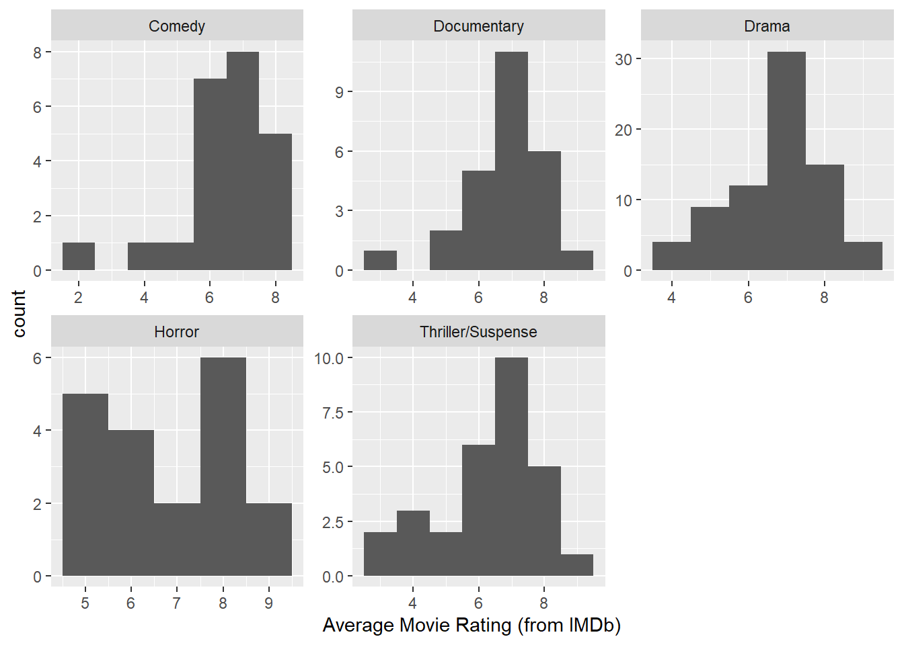
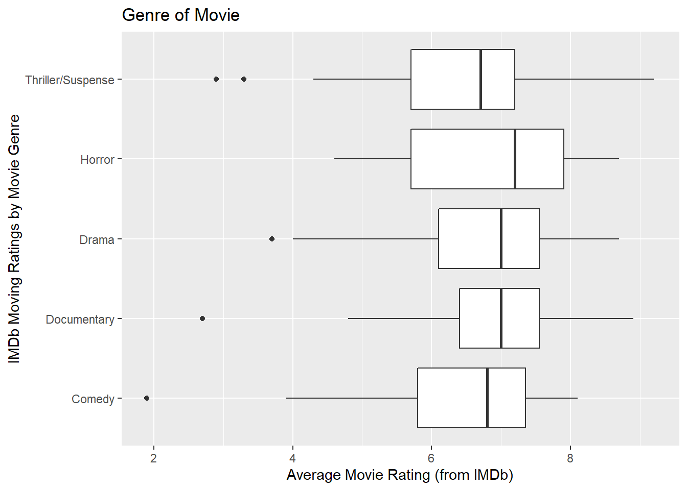

| Genre | min | Q1 | median | Q3 | max | mean | sd | n | missing |
|---|---|---|---|---|---|---|---|---|---|
| Comedy | 1.9 | 5.8 | 6.8 | 7.35 | 8.1 | 6.413 | 1.413 | 23 | 0 |
| Documentary | 2.7 | 6.4 | 7 | 7.55 | 8.9 | 6.835 | 1.204 | 26 | 0 |
| Drama | 3.7 | 6.1 | 7 | 7.55 | 8.7 | 6.729 | 1.149 | 75 | 0 |
| Horror | 4.6 | 5.7 | 7.2 | 7.9 | 8.7 | 6.826 | 1.37 | 19 | 0 |
| Thriller/Suspense | 2.9 | 5.7 | 6.7 | 7.2 | 9.2 | 6.317 | 1.536 | 29 | 0 |
Week 7: Hypothesis Testing, Decision Errors, & Multiple Comparisons
Inference for Many Means (ANOVA)
Alright, so we just learned about how we can analyze the differences in many means using ANOVA (ANalysis Of VAriance). As a refresher, with an ANOVA, we’re comparing the variability within groups (MSE) to the variability between groups (MSG).
If we believe that the mean of at least one group is different from the others, ideally in a visualization we’d like to see:
- large differences in the means between the groups
- small amounts of variability within each group
- Sketch an example of three boxplots that exhibit the characteristics above.
Hypotheses in an ANOVA
In an ANOVA, we only do hypothesis testing (no confidence intervals until after ANOVA), and the hypotheses are always the same:
\[ H_0: \mu_1 = \mu_2 = \dots = \mu_k \]
\[ H_A: \text{At least one of the means } (\mu_k) \text{ is different} \]
Let’s refresh what we saw for the differences in averageRating between the Genres. d
- How many groups do we have in our ANOVA?
- Rewrite the null an alternative hypotheses above to reflect the number of groups in our analysis. It would be nice to know what groups the means correspond with!
Visualizing an ANOVA
By plotting the data before we do a hypothesis test, we get a better understanding of why we got a small / medium / large p-value!
Here are faceted histograms visualizing the distribution of movie ratings across the different genres.

- How different are the centers of these groups from each other?
- How different are the spreads of these groups from each other?
You might like to have the side-by-side boxplots to answer #4, so here you go!

- Overall, do you believe any of the genres stand out as really different from the others?
Conditions of an ANOVA
Like every statistical analysis we’ve done in this class, when conducting an ANOVA you have two types of methods, (1) a simulation-based method or (2) a theory-based (mathematical) method. The book describes both options, but today we are going to focus on theory-based methods.
In an ANOVA there are two conditions that we need to evaluation regardless of which method we use:
- independence of observations within and between groups
- equal variance across every group
- Evaluate if you believe the independence condition is or is not violated. Keep in mind that there are two components to this condition you need to discuss!
- Evaluate if you believe the equal variance condition is or is not violated. Make specific reference to the visualizations and the summary statistics presented previously!
Additional Condition for Theory-Based Methods:
As we have seen before, with a theory-based method we have one additional condition:
nearly normal distributions across every group
- Why should we use faceted histograms to assess this condition rather than side-by-side boxplots?
- Evaluate if you believe the normality condition is or is not violated. Make specific reference to the visualization you stated in #8!
Carrying Out an ANOVA in R
Now that we’ve checked the conditions of an ANOVA, we are ready to perform the analysis! Earlier today, you were introduced to the aov() function. The aov() function is the tool we use to perform an ANOVA in R.
- Fill in the necessary components of the code below.
Alright, if we ran the code you just input, we’d get the following table:
| term | df | sumsq | meansq | statistic | p.value |
|---|---|---|---|---|---|
| Genre | 4 | 6.446 | 1.611 | 0.9691 | 0.426 |
| Residuals | 167 | 277.7 | 1.663 | NA | NA |
- What is the mean squares of
Genre?
- What is the mean squares of the errors?
- How was the
statisticof 0.969 found? What is the name of that statistic?
- What is the p-value associated with that statistic?
- Based on the p-value, at an \(\alpha = 0.05\) significance level, what decision would you reach regarding your hypotheses?
- Based on your decision in #15, what would you conclude regarding the mean movie rating across these genres?
Let’s revisit the statistics we first saw. It’s entirely possible that in #5 you said that you didn’t believe there were “substantial” difference across these groups.
Genre min Q1 median Q3 max mean sd n missing
1 Comedy 1.9 5.8 6.8 7.35 8.1 6.413043 1.413025 23 0
2 Documentary 2.7 6.4 7.0 7.55 8.9 6.834615 1.203974 26 0
3 Drama 3.7 6.1 7.0 7.55 8.7 6.729333 1.148533 75 0
4 Horror 4.6 5.7 7.2 7.90 8.7 6.826316 1.370256 19 0
5 Thriller/Suspense 2.9 5.7 6.7 7.20 9.2 6.317241 1.536478 29 0- How does this connect with the p-value you obtained in #14?
Hypothesis Testing Errors
In a hypothesis test, there are two competing hypotheses: the null and the alternative. We make a statement about which one might be true, but we might choose incorrectly. There are four possible scenarios in a hypothesis test:
| \(H_0\) is True | \(H_0\) is False | |
|---|---|---|
| Reject \(H_0\) | Type I Error | Good Decision! |
| Fail to Reject \(H_0\) | Good Decision! | Type II Error |
- Based on the decision you reached in #15, what type of error could you have made?
- With an \(\alpha = 0.05\), what percent of the time would we expect to make a Type I error?
- How does \(\alpha\) relate to the probability of making a Type II error?
Inference after ANOVA
If we had found a “significant” p-value, we could have concluded that at least one of the genres had a different mean movie rating. However, an ANOVA does not tell us which group(s) is(are) driving the differences.
What we could do is compare all possible combinations of two means. With five groups, that would result in 10 different hypothesis tests for a difference in means (e.g., \(\mu_{\text{Comedy}} - \mu_{\text{Documentary}}\), \(\mu_{\text{Comedy}} - \mu_{\text{Drama}}\), \(\mu_{\text{Horror}} - \mu_{\text{Thriller}}\), etc.).
However, for each hypothesis test we do at an \(\alpha\) of 0.05, we risk making a Type I error 5% of the time. In fact, we can make a mathematical equation for the probability of making a Type I Error, based on the number of tests we perform.
\[ \text{Probability of Making a Type I Error} = 1 - \text{Probability of Not Making a Type I Error} \]
\[ = 1 - (0.95)^{\text{\# of tests}} \]
- If we do 10 hypothesis tests, what is the probability of us making a Type I Error?
Remedy to Type I Error Inflation

One solution to the problem of multiple comparisons is called the Bonferroni correction. Essentially, you take your \(\alpha\) threshold and divide it by the number of tests you are going to perform. This is referred to as \(\alpha^*\).
You then use this \(\alpha^*\) value as the new threshold value for every pairwise comparison. If a comparison’s p-value is less than \(\alpha^*\), then you reject \(H_0\). If a comparison’s p-value is greater than \(\alpha^*\), then you fail to reject \(H_0\)
- If our original \(\alpha\) was 0.05, what value should we use for \(\alpha^*\)?
Post-Hoc Comparisons
Below is a table of all 10 of the hypothesis tests we could do when comparing the means of two groups.
- Using the \(\alpha^*\) you found in #22, circle the hypothesis tests whose p-values are less than \(\alpha^*\).
| Group 1 | Group 2 | p-value |
|---|---|---|
| Documentary | Comedy | 0.255 |
| Drama | Comedy | 0.3049 |
| Drama | Documentary | 0.7202 |
| Horror | Comedy | 0.3027 |
| Horror | Documentary | 0.983 |
| Horror | Drama | 0.77 |
| Thriller/Suspense | Comedy | 0.7905 |
| Thriller/Suspense | Documentary | 0.1393 |
| Thriller/Suspense | Drama | 0.1458 |
| Thriller/Suspense | Horror | 0.1828 |
Your \(\alpha^*\) value should be much less than your original \(\alpha\) of 0.05, which makes it harder to reject the null.
- When the number of comparisons gets larger, what happens to the probability of making a Type II error?